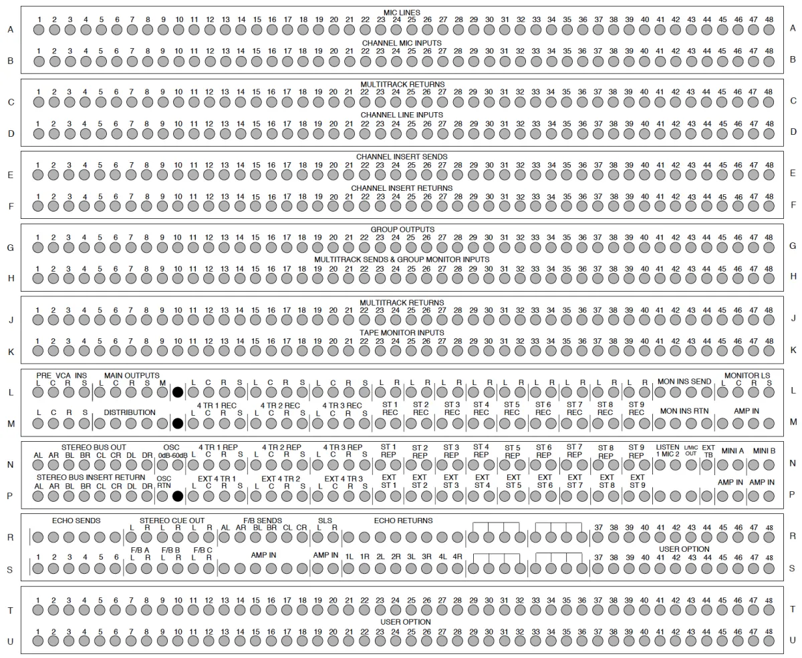
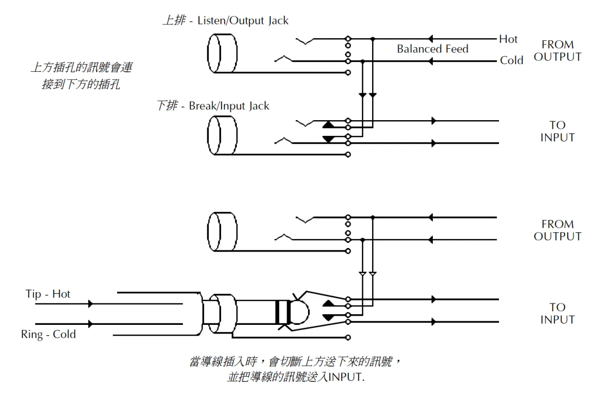

SSL說明書導讀系列已經寫到了第六章，這也是控台硬體介面的最後一章。第六章講的重點在於Patchbay的邏輯和預設設定，錄音室的線要怎麼接，不只是助理的必備技能，每個訊號怎麼走、從哪裡走到哪裡、也是身為一個聲音工作者在過程中必須一直很清楚的事情呢！
The Patch
The SL 9000 J 系列的配線槽(patchbay)，每個控台安裝至少九組1U高的bantam (TT)配線槽，各有兩排的插孔。
視控台的I/O模組數量而定，每一列的插孔數量有可能不同。軌道數較多的控台(56軌以上)會將配線槽分成兩欄(例：64軌控台上有兩欄32軌的配線槽，80軌的控台有兩欄40軌的配線槽)。 大部分的控台上都是安裝integral patchbays，不過也可以另外選擇 remote patchbays的版本。Remote patchbay的設計和內部的normalling將會跟同樣大小的integral patchbay一樣。 

配線槽每一列由一組邏輯配對(logical pair)組成，上方的插孔為輸出孔，下方的為輸入孔。配線槽共有兩種normalling方式：
HALF-NORMALLED：上排的插孔為輸出孔。若我們將導線插入上排的插孔，我們可以接收到該孔的輸出，但不會中斷與下排插孔的連接。下排的插孔為輸入孔，導線插入時，會中斷上排送下來的訊號。（見下圖）

FULLY NORMALLED：上排的inners連接到下排的inners。插入任一插孔的導線都會中斷上下排的連結。

預設設定只有最上方兩排插孔(Mic Lines和Channel Mic Inputs)是fully normalled，這樣可以避免兩隻麥克風同時插入一個輸入。除了R, S, T 和 U排使用者自定義的插孔外，剩下的插孔預設都是half normalled。額外安裝的配線槽則要視安裝時的設定決定線路的狀況。

除了一些例外，A到K排的設定大部分都是和上述說的一樣：
多軌返送(Multitrack Returns)：進入控台時訊號會被分送(split)到C和J排。
Channel Insert Send(E排)：訊號是持續不中斷的，而F排的Channel Insert Return則是由I/O模組上的insert IN 按鍵切換。這方便我們在可以等設定好連接insert裝置的訊號大小後再打開Channel Insert，同時也讓我們有多一個地方可以轉送各模組的訊號。
Group output：位在G排，I/O模組Bus Trim control之後(編按：也就是說bus trim會影響他的輸出訊號)。這些訊號會被normalled到H排。
H排：Multitrack Sends (多軌機的輸入)，同時也是GROUP監聽按鈕按下會啟動的聲音軌道。就算Groups被cross patched，GROUP監聽按鈕永遠會都輸出多軌轉送的監聽。
L-S排：有些接頭是cross normalled並會在下面的文章說明，包含一些線路不是很直覺明顯的配線槽，也會特別解釋。以下敘述是以48軌配線槽為主，根據自己使用的控台，在K排之後的位置可能會有一些變化，不過不論他們的位置在哪裡，功能和線路都和以下所說是一樣的。
PRE VCA INS (L1-4, M1-4) ：位於LCRS匯流擴大機(LCRS bus mix amps)之後和主輸出(Main Output)VCA Fader(含4-channel Compressor)之前的四個插入點(insert points)。 這幾個插入點可以用來插入其他壓縮器/限制器或EQ等處理進入主控台輸出(main desk outputs)的聲音。
MAIN OUTPUTS + DISTRIBUTION (L5-L9, M5-M9)：控台的主LCRS和Mono輸出。L5-8輸出主LCRS輸出，並normalled至主LCRS分配插孔(M5-8)。這四個插孔輸出訊號到L11-L40的4-Track和Stereo錄音機(Recorder)插孔。4-Track 1和Stereo 1訊號是直接從M5-8送來; 其他的錄音機訊號都是經過buffered。L11-22的三組4-Track 錄音機輸入源於LCRS輸出(M5-8)。Stereo machine輸入(L23-L40)訊號則是從L和R輸出(M5&M7)來的。四個分配孔(M5-8)可以方便我們使用多軌機上做聲音的複製(multi-machine tape copying)。舉例來說，在M5和M7插入的訊號，將會送到所有連接在M23-40機器的輸入。
TAPE MACHINES (L, M, N, P 11-40)：每個錄音機四個插孔。上排(L排)輸出控台的主輸出(main output)，並且normalled到錄音機的Record input(M排)。錄音機回放輸出接在第N排並normalled至外部監聽選擇器(External Monitor Selector)輸入(P排)。P排的訊號方便我們使用指示器輔助作業。舉例來說，將訊號接到P23並選擇EXT 1，這時把主表頭(main meters)選在EXT 1她就會將EXT1的訊號顯示出來。
STEREO BUS OUTPUTS and INSERT RETURNS (N1-8 and P1-8)：四個Stereo busses的post main level control輸出/插入(Output/Insert)。若是用來作為外部限制器或EQ的插入點的話，效果會作用在送回主LCRS mix busses前的訊號。 插入返送(Insert Return)插孔(P1-8)將訊號送去外部監聽選擇器(External Monitor Selector 1)同時也送到控台的connector panel，在有需要的時候可以連接額外的layback machine。
OSC (N9-10 & P9) – 沒錯，震盪器(oscillator)！
N9輸出震盪器的訊號並normal到P9，控台的震盪器分配系統。震盪器分配系統是被中央區塊的 BUSSES 1-48，ABCD 和MIX 選擇鈕控制。 若有 需 要 的 話 ， 也可 以 連 接外 部的 震 盪 器或粉 紅 噪音 等訊號來源 到 P 9 進 入震盪器分配系統。 N10提供-60dB的震盪器訊號，可以用來檢查麥克風輸入的訊號。
MONITOR INSERT (L41-44 & M41-44)：這是一個可以開關的插入點(insert point)，在主監聽音量旋鈕前，設計來連接杜比環繞音效編碼/解碼器(Dolby Surround Encoder/Decoder)。
MONITOR LS (L45-48 & M45-48) – L45-48：輸出主監聽輸出(Main monitor outputs)，並normalled至M45-48，連接到主監聽擴大機(Main monitor amps)。
警告！ 這幾個插孔會將訊號送到喇叭的擴大機，如果不小心插入標準line level訊號可能會把喇叭衝爆，傷害到喇叭和自己的耳朵。
MINI A 和 MINI B (N45-48 & P45-48)：將訊號送到兩對近場監聽的插孔。再次提醒，如果不小心插入標準line level訊號可能會把喇叭衝爆。
LISTEN MICS (N41-43 and P41-42)：N41和42應該要連接到兩個掛在錄音間的麥克風。麥克風訊號normalled至P41-42，並輸入到控台的Listen Mic inputs。若有需要，可以在中央區塊控制訊號大小和開關。
L/MIC OUT(N43)， 提供過壓縮器後(post-compressor)的Listen Mic輸出，這也是一個受到許多SL4000使用者喜愛的聲音。值得注意的是，進入壓縮器的訊號是兩個Listen Mic Inputs的總和，若只想要其中一隻麥克風的聲音，我們要先把另一支麥克風的輸入關掉。
EXT TB (N44 & P44)：外接的Talkback。上排訊號為控台內一個可切換的talkback麥克風訊號 ，由SL952上的EXT TB按鍵開啟。下排將此訊號送往一個只有錄音室接線人員知道的地方。(編按：說明書就這樣寫，也不知道是哪裡= =)
ECHO SENDS (R1-6 & S1-6)：R1-6是FX Send 1 到 6 的輸出，並且 normalled 到控台的effect send輸出(S1-6)。
STEREO CUE OUT (R7-12 & S7-12)：Three parallel outputs of the Cue Stereo Bus的三個平行訊號輸出，normalled到中央區塊耳機輸出F/B A, B and C電路，可切換的STEREO CUE 輸入。
F/B SENDS (R13-18 & S13-18)：上面描述到的三個耳機輸出。可以選擇接收Cue Stereo或兩個外部訊源選擇器(External Monitor Selectors)的訊號。上排的訊號 normalled到下排的foldback amp輸入。
SLS (R19-20 & S19-20)：錄音間喇叭輸出從這裡normalled至擴大機。小心！
ECHO RETURNS (R21-28 & S21-28)：R21-28可以接在Reverb或其他效果器的輸出。R21-28被normalled到四個Stereo Echo Returns的輸入，位置在控台的中央區塊。
本說明書版權歸Solid State Logic, Oxford, England所有，中文化僅供技術交流與強力錄音室內部使用，禁止用於商業用途。
PDF版：點我下載